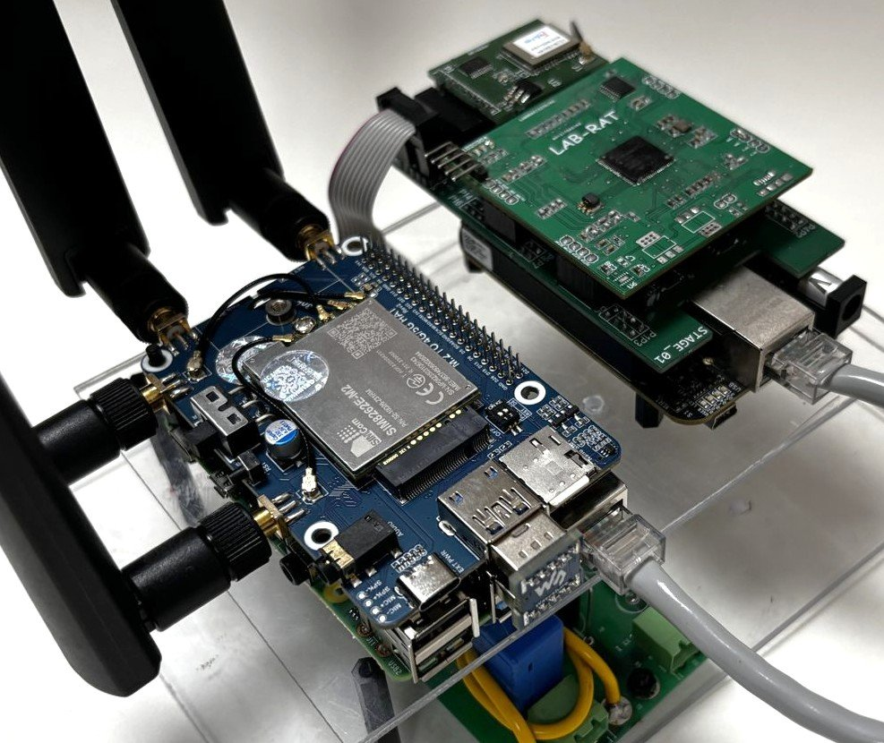
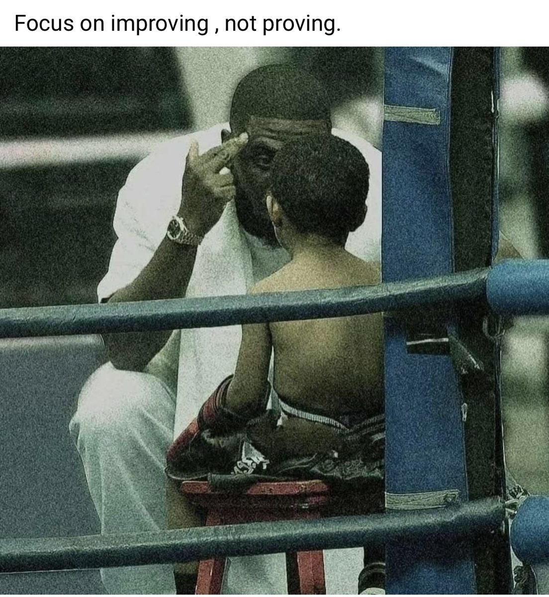
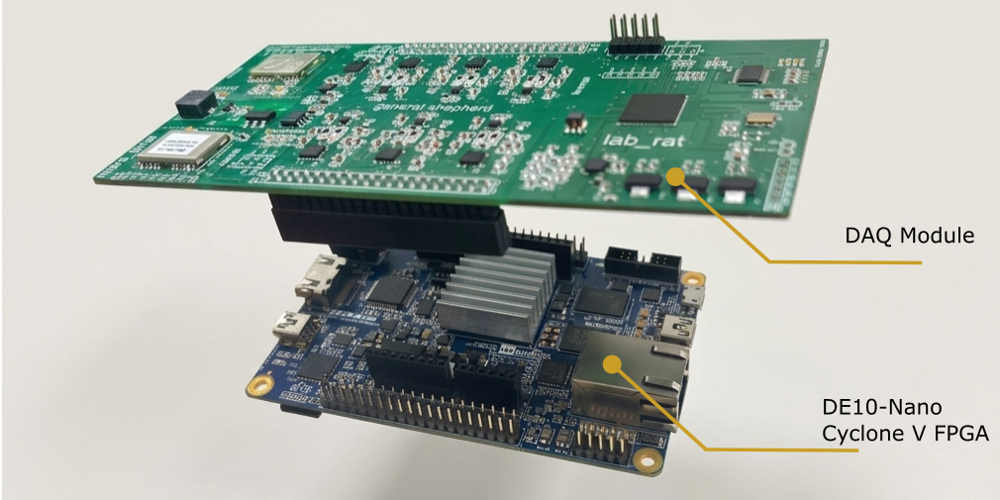

About
Research grounded in real grids.
I am a Ph.D. researcher in Power Engineering at the Indian Institute of Technology Kanpur, advised by Prof. Ankush Sharma. I develop synchronized measurement systems to understand how power grids behave, combining signal processing with embedded FPGA and SoC hardware. My research connects micro-PMU development, phasor estimation, and waveform monitoring to make accurate, high-resolution measurements practical in real distribution networks.
My interests include synchrophasor estimation, sparse decomposition of synchronized waveforms, wide-area monitoring, and timing with India’s NavIC satellite system. I also work on renewable energy integration, distributed control for power distribution, and cyber security challenges in smart grid monitoring.
CurrentPh.D. · IIT Kanpur
PreviousMaster’s · IIT Kanpur
UndergraduateB.Tech. · CTAE Udaipur
Research visitSG-REAL Lab · West Virginia University, 2023
Prof. Anurag K Srivastava
Prof. Anurag K Srivastava


Research
From waveform to insight.
Micro-PMU platforms
High-resolution, time-synchronized acquisition and phasor processing on embedded FPGA and SoC hardware for distribution networks, with 512 samples per power cycle and 100 measurements per second.
Dynamic phasors
Frequency-adaptive estimation methods for accurate phasor, frequency, and rate-of-change measurements during changing grid conditions.
Sparse compression
Compact representations of synchronized point-on-wave data that retain detail needed for disturbance analysis.
Applied work
Built for deployment.
Technology transfer
Micro-PMU processing architecture
A SoC-based phasor processing architecture for a micro-PMU device was transferred to Synergy Systems & Solutions Pvt. Ltd.

Field project · 2024
Railway power network monitoring
Developed and deployed a synchronized point-on-wave prototype on the Panki–Chakeri railway section. Six months of continuous measurements supported analysis of abnormal voltage fluctuations.
Selected output
Publications & patents.
Journals & Transactions
- IEEE TIAA Data Acquisition Framework for Synchrophasor Measurement Applications in Distribution GridUnder revision
- IEEE TIMEnhanced Power Distribution Monitoring using Compressed PoW Measurements Based on Sparse DecompositionAccepted
- IEEE TIAEdge-Driven Distributed Control for Power Distribution: A Real-Time Hardware-in-the-Loop Testbed for Industrial Automation and ApplicationsView paper ↗
Conferences
- IEEE PES GM 2025Low Frequency Oscillation Monitoring in Railways Electrical NetworkView paper ↗
- IEEE SEFET 2025A Unified Protocol Converter Framework for Integrating PMUs with SCADA SystemsView paper ↗
- IEEE STPEC 2025IoT Node Synchronized with Indian Constellation for Phasor Measurement in Power SystemView paper ↗
- IEEE SGSMA 2026Evaluation of 5G Communication for Real Time Monitoring of Power System Using PMUsView paper ↗
Granted Indian patents
- An Apparatus for Micro Resolution Phasor MeasurementPatent No. 410521
- A SCADA Integrated Data Aggregation System and Method ThereofPatent No. 587957
- Method and Apparatus for Providing Secure Real-Time Sampled Value Communication in Digital SubstationPatent No. 603812
Patent applications under review
- Breaker Guard System and Method for Controlling Operations of Electrical Circuit Breakers Based on AuthenticationApplication No. 202411068969
- Machine Learning-Based System and Method for Microgrid Fault Detection Using Current MeasurementsApplication No. 202511120464
Skills
Tools of the trade.
Embedded systems
FPGA, SoC, Raspberry Pi and embedded hardware development.
Programming
C, C++, Python, Assembly, VHDL and MATLAB.
Hardware-in-the-loop
Power system testing with RTDS and Typhoon HIL.
Design & prototyping
Altium PCB design and Fusion 360 / AutoCAD.
Networking & Linux
Linux systems, Wireshark, Nmap and Mininet.
Grid communication
IEEE C37.118, DLMS, DNP3, IEC 61850 and IEC 60870.